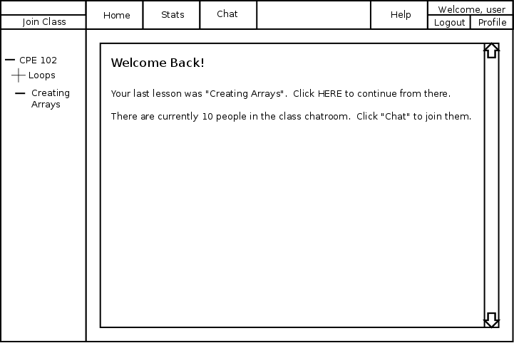
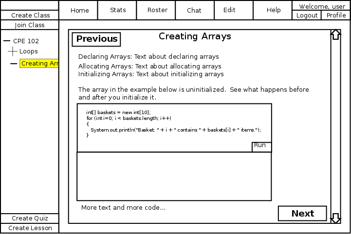
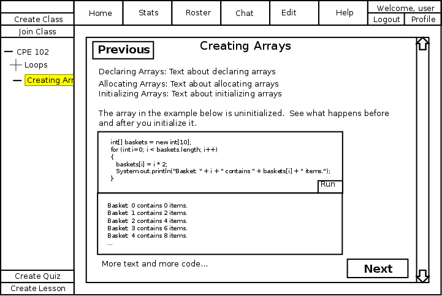
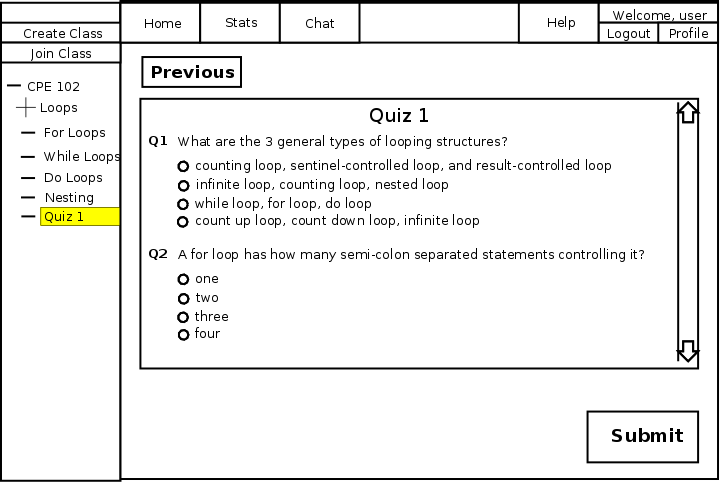
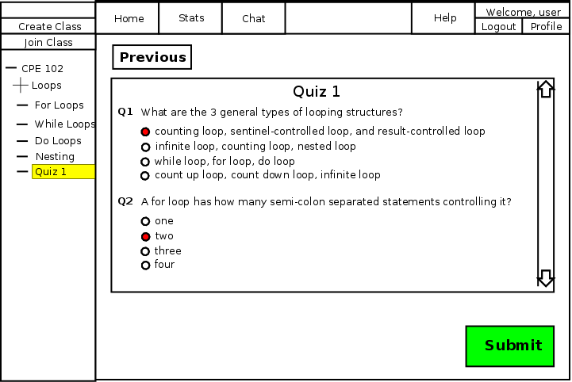
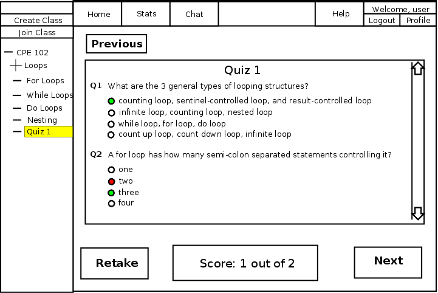
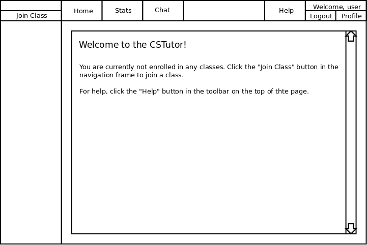
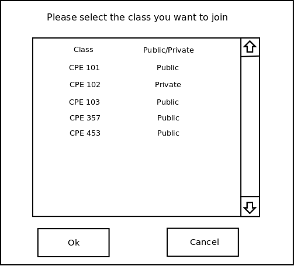
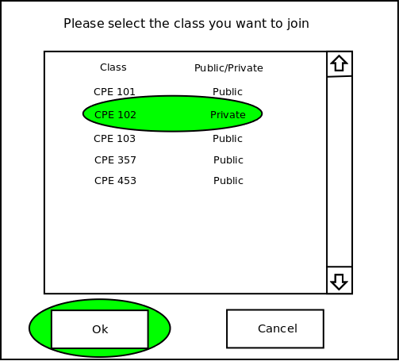
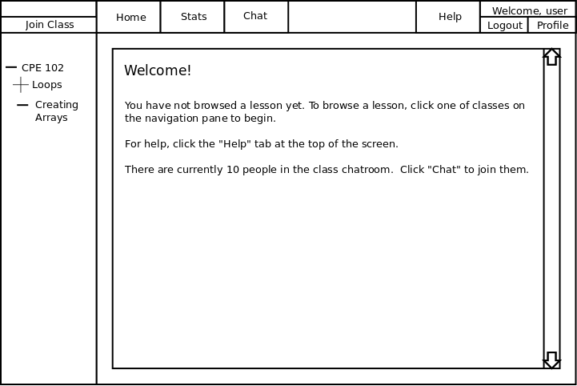

This scenario introduces the lesson interface. Lessons include Interactive Code Lessons and Quizzes.
After logging in (see Logging In), the student selects a lesson from the navigation pane. After selecting a lesson, the content of the lesson is displayed in the right pane.
After selecting a lesson, a student may select a new lesson in the navigation pane at any time.

Figure 2.4.1-1: Initial Lesson Screen
An interactive code lesson is a lesson that combines instructional text with code examples. The code examples may be modifiable and executable.
The student can use the scroll bar on the right hand side of the page to navigate within the lesson. At the end of the lesson, select "next" or "previous" to move to the next or previous lesson.
Interactive Code Lessons may include editable or executable code.
Editable code will be contained in a text box. Students type code into the box use it like a standard GUI text editor (like gedit or notepad).
The sample code may also be executable. In this case, the student presses the "run" button and the code in the box runs. Output from the program is displayed below the code.
The figure below demonstrates how a lesson might use editable code to teach about initializing arrays.

Figure 2.4.2.1-1: Array Lesson with error for student to fix
Here, the lesson explicitly asks the student to edit the code and fix a problem. The student selects "run" and realizes that all of the baskets contain nothing. He adds a single line and selects run again, this time the baskets contain items.

Figure 2.4.2.1-2: Array Lesson with error corrected
The shell is not restricted to code specified by examples, giving the student freedom to experiment within the confines of the code language.
Quiz lessons give the student immediate feedback on their understanding of lesson material. A quiz consists of one or more questions that should be answered by the student.

Figure 2.4.3-1: Uncompleted Quiz
The student answers the mutliple choice questions by clicking on of the radio buttons next to the answer of his choice. The answer can be changed as many times as the student wants. Once the student finishes the quiz, he selects the "submit" button to receive his score.

Figure 2.4.3-2: Completed Quiz
After the student completes the quiz, they will be presented with the results. In this example, you are able to see which questions you got wrong, and what the right answer was.

Figure 2.4.3-3: Corrected Quiz
At this point, the user can retake the quiz, review previous lessons, or go on to the next lesson.
After logging in for the first time (see Logging In), the student the CSTutor shows the student a welcome screen. The welcome screen shows that the student has enrolled in no classes as shown in Figure 2.4.4-1.

Figure 2.4.4-1: Initial lesson screen when enrolled in no classes
To join a class, the student clicks the Join Class button in the navigation pane. After clicking the Join Class button, the CSTutor shows the dialog in figure 2.4.4-2.

Figure 2.4.4-2: Join Class Dialog
The dialog box conatins all the available classes in the database. To join a class, the student selected on of the the classes and clicks the Ok button at the bottom of the dialog box, as shown in Figure 2.4.4-3. Students are given instant access to public classes. However for private classes, students must wait to be authorized by an instructor before they can join the class.

Figure 2.4.4-3: Join Class Dialog with Action
After the student has been added to the class roster, the CSTutor displays the class welcome screen shown in Figure 2.4.4-4.

Figure 2.4.4-4: Joining First Class
The student can now navigate the lessons in the class.